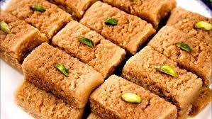
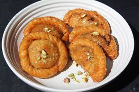

Gulab Jamun
Ingredients
- 1 Cup Milk powder
- 2 tablespoons flour
- 1/8 teaspoon baking powder
- 1 tablespoon ghee
- 5 tablespoons milk
- Oil for deep-frying
- 1 cup sugar
- 1/4 cup water
- 1/4 teaspoon lemon juice, to prevent the sugar syrup from crystallizing.
Recipe
- Prepare the dough.
- Let the dough rest.
- Prepare the sugar syrup.
- Roll the jamuns.
- Fry the jamuns.
- Add jamuns to the sugar syrup.
- Garnish.

Ghewar
Ingredients
- 2 cups maida
- ½ cup melted ghee
- 1 cup chilled water
- 1 cup milk
- Ghee/oil for frying
- Make Sugar Syrup first.
- 1 cup sugar
- ½ cup water
- Lemon juice (2–3 drops)
- Cardamom powder
Toppings: Rabri, nuts, saffron milk (optional)
Recipe
- Make Batter-Whisk melted ghee.Add maida gradually.
- Prepare Sugar Syrup
- Heat lots of ghee/oil in a tall kadai.Fry until golden.
- Soak/pour sugar syrup over hot ghewar.

Milkcake/Alwar Kalakand
Ingredients
- Full-fat milk – 1 litre
- Sugar – ¾ cup
- Ghee – 1–2 tbsp
- Lemon juice / vinegar – 1–2 tsp (for slight curdling)
- Cardamom powder – ½ tsp
- Optional: chopped pistachios for garnish
Recipe
- Heat full-fat milk in a heavy pan and bring to a boil.
- Simmer on low flame and keep stirring till milk reduces slightly.
- Add 1 tsp lemon juice to lightly curdle the milkAdd 1 tsp lemon juice to lightly curdle the milk
- Continue cooking until it thickens into a grainy, halwa-like texture
- Add sugar and mix well; cook until mixture tightens and leaves the sides.
- Add ghee and cardamom powder; cook for another 2–3 minutes
- Grease a tin/plate with ghee and pour the mixture.
- Press and level it using a spatula or bowl.
- Let it cool at room temperature for 3–4 hours to get the classic brownish center.
- Cut into square pieces and serve.

Gujiya
Ingredients
- All-purpose flour (maida) – 2 cups
- Ghee – 4 tbsp
- Water – as needed to knead
- Khoya/mawa – 1 cup
- Powdered sugar – ½ cup
- Chopped dry fruits (almonds, cashews, raisins) – 2–3 tbsp
- Grated coconut (optional) – 1–2 tbsp
- Cardamom powder – ½ tsp
Recipe
- Mix maida + melted ghee; rub to form a crumbly texture.
- Add water slowly and knead a firm, smooth dough.
- Rest covered for 20–30 minutes.
- Roast khoya on low flame till slightly golden.
- Mix well to form the filling.
- Roll small dough balls into medium-thin circles.
- Place 1–2 tbsp stuffing on one side.
- Fold into a half-moon shape
- Heat oil and fry gujiyas until golden and crisp.

Ras Malai
Ingredients
- Full-fat milk – 1 litre
- Lemon juice/vinegar – 2 tbsp (to curdle milk)
- Water – 3 cup
- Sugar – 1 cup
- Full-fat milk – 1 litre
- Sugar – 5–6 tbsp
- Saffron strands (optional)
- Chopped pistachios/almonds
Recipe
- Boil milk, add lemon juice to curdle, separate paneer using a cloth.
- Shape small round discs (not too thick).
- Boil water + sugar to form syrup.
- Add paneer discs and cook 12–15 mins (they will puff up).
- Remove and gently press to release extra syrup.
- Boil 1 litre milk and simmer till it thickens slightly.
- Add sugar, cardamom, saffron, and dry fruits.
- Cook until creamy.
- Add the cooked paneer discs into warm rabri.
- Rest for 2–3 hours for soaking.
- Serve Chilled.